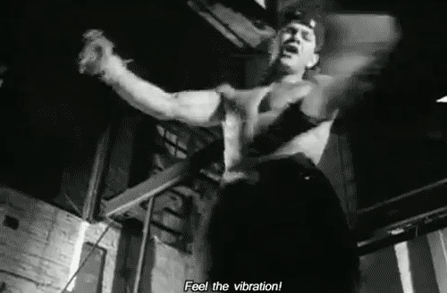

Potentially the world's first javascript library named after Mark Wahlberg.
Note: this library actually has nothing to do with Marky Mark or Mark Wahlberg. It's a bookmarklet that needed a name.
Marky.js is a bookmarklet that will mark your current location on a long page. That location will be stored in your browser using the HTML5 LocalStorage API, so there's no worry of the NSA tracking your reading progress through wikipedia.
This is useful when doing things like keeping track of progress through extended, single-page programming tutorials. Which is the specific problem I'm writing this bookmarklet to fix.
This bookmarklet is an exploration of bookmarklets, Coffeescript and LocalStorage.
